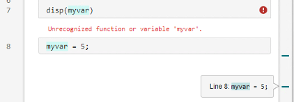
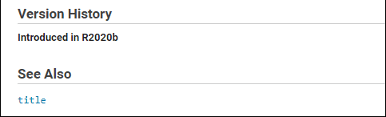
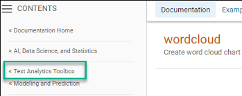

Resolve Error: Unrecognized Function or Variable
Issue
A frequently encountered error message indicates that MATLAB® cannot find a particular program file or variable:
Unrecognized function or variable 'x'.
Many situations can lead to this error. This topic describes how to identify and address common scenarios.
Possible Solutions
Look for Typos
One of the most common causes is misspelling the function or variable name.
Especially with longer names or names containing similar characters (such as the
letter l and numeral one), it is easy to make mistakes and
hard to detect them.
Often, when you misspell a name, a suggested name appears in the Command Window. For example, this command fails because it includes an uppercase letter in the function name.
accumArray(1,10)
Unrecognized function or variable 'accumArray'. Did you mean: >> accumarray(1,10)
Press Enter to execute the suggested command or Esc to dismiss it.
Check Variables in Workspace
To check whether a variable you want to use is available in the current
workspace, use the whos command.
If the variable is not listed, here are possible causes:
The code to create the variable has not yet run in the current session, or a call to the
clearorclearvarscommand removed the variable. If you previously created the variable, the code is often available in the Command History, which you can access from the command line by using the up arrow key.If you are editing a script file, the code might be trying to use the variable before assigning a value to that variable. When viewing a file in the Editor, you can click a variable name to find all the references to the variable and check the order of operations.

If the variable is in the workspace and you are writing a function that throws
the error, check that you are passing the variable to the function as an input
argument. Functions do not use the base workspace, so variables must be
explicitly passed into the function workspace. For instance, this function
cannot find variable c even if it exists in the base
workspace.
function y = myfunction(x) y = x + c; end
To fix this problem, add c to the function definition
line.
function y = myfunction(x,c) y = x + c; end
Then, include the variable in the function call.
Y = myfunction(X,c);
For more information about workspaces, see Base and Function Workspaces.
Check Function Availability
If the unrecognized item is a function and you are unfamiliar with that function, check whether it is included in your installed software.
First, search the most recent MathWorks documentation for the function. If there is no documentation for that function, check other resources, such as MathWorks® File Exchange, to locate the software that includes the function.
If you find the function in MathWorks documentation:
Run example code from the documentation to check whether the function is available. If the code does not generate the
Unrecognized functionerror, skip to Check Function Inputs to continue diagnosing the problem.Check whether the function is newer than your version of the software. To identify when a function was introduced, refer to the Version History section of its reference page.

To check your version of MATLAB, use the
versioncommand. The release is in parentheses.version
ans = '24.1.0.2661297 (R2024a) Update 5'Check whether the required product is installed. The required product is in the left pane of the documentation page.

To check whether that product is installed, use the
vercommand.ver
. . . MATLAB Version 24.1 (R2024a) Deep Learning Toolbox Version 24.1 (R2024a) Statistics and Machine Learning Toolbox Version 24.1 (R2024a) Text Analytics Toolbox Version 24.1 (R2024a)
If the product is not listed, it is likely not installed. For information on installing products, see Get and Manage Add-Ons.
If you have installed the product, but it does not appear in a regenerated list from
ver, update the toolbox cache. On the Home tab, in the Environment section, click Settings. Select MATLAB > General, and then click Update Toolbox Path
Cache.
Settings. Select MATLAB > General, and then click Update Toolbox Path
Cache.If the product still does not appear in the list from
ver, make sure that you have an active license for that toolbox. Use thelicensecommand to display currently active licenses and visit the License Center to view the associated products. For more information on managing licenses, see Manage Your Licenses.
Check Function Inputs
Calling an available function with existing variables can fail when the inputs
are in a form that the function cannot recognize. Refer to the function
documentation for expected syntaxes and input arguments. You can access function
documentation directly with the doc command.
doc functionName
There are two common issues that can be difficult to identify: using unexpected indexing expressions and omitting an object input.
Unexpected Indexing. If you type a colon in the position of an input argument, MATLAB interprets the code as an indexing expression instead of a
function call. For example, the isnumeric function
accepts a single input array, isnumeric(A). In many
cases, isnumeric can detect when there are multiple
arguments.
isnumeric(A,B)
Error using isnumeric Too many input arguments.
However, with a colon in place of an argument, MATLAB interprets isnumeric as an undefined
variable instead of a function.
isnumeric(A,:)
Unrecognized function or variable 'isnumeric'.
Omitted Object Input. Object methods are typically documented using function syntax in the form
method(object,inputs). If you are accustomed to using
dot notation for methods in the form
object.method(inputs), make sure to include the
object as the first input when using function form.
Make Your Function Available
When you are writing a function that you plan to call from the command line or from another file:
Save the function in a file with the same name as the function. If the names of the function and file are different, the filename overrides the function name.
For example, save a function named
curveplotin a file namedcurveplotwith the extension.mor.mlx. If functioncurveplotis in a file namedcurveplotfunction.m, calls tocurveplotfail.Make sure that the function is the first or only function defined in the file and that the file does not include any code outside function definitions. If the function does not meet these conditions, it is a local function and cannot be called from outside that file. For more information, see Local Functions.
For more information on writing functions, see Create Functions in Files.